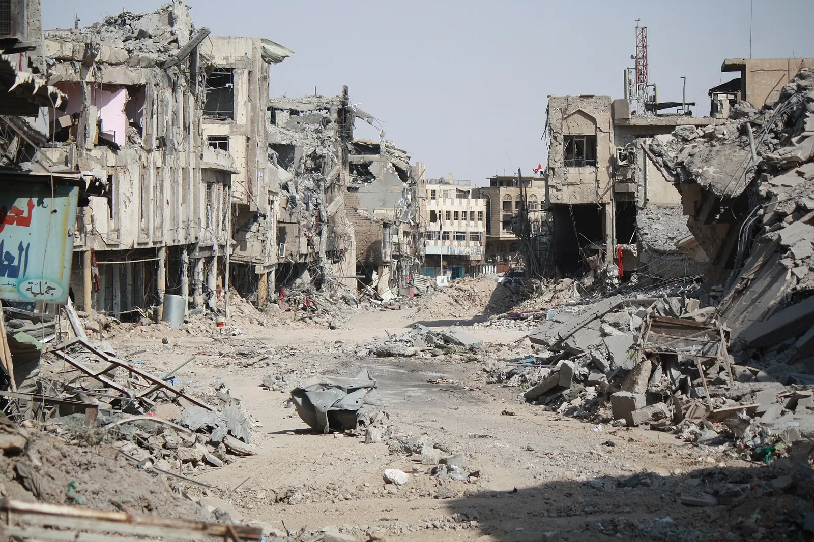

Service members killed
4,599
The last American troops left Iraq on September 30, 2026, twenty-three years after the invasion. No one counted the Iraqi dead as they fell, and estimates still differ by hundreds of thousands. This page sets out what is known, and where each number comes from.
Sources: Costs of War (Brown University) · Iraq Body Count · The Lancet · PLOS Medicine · WHO · UNHCR
Baghdad from orbit, March 31, 2003, eleven days into the invasion. Black plumes are burning oil. False color: vegetation shows red. NASA/METI/AIST/Japan Space Systems and the U.S./Japan ASTER Science Team · via Wikimedia Commons · public domain
On March 20, 2003, the United States and Britain invaded Iraq, citing weapons of mass destruction that were never found. Saddam Hussein’s government fell within three weeks. What followed was two decades of war: an insurgency against the occupation, a sectarian civil war, and the rise and defeat of the Islamic State.
On September 30, 2026, US Central Command announced that its last 2,500 troops had left, ending the coalition’s mission against ISIS. A small contingent stays to guard American diplomats. The United States had withdrawn once before, in December 2011, and came back in 2014.
Brown University’s Costs of War project counts 280,771 to 315,190 people killed by the war’s direct violence from March 2003 to March 2023. About two in three were civilians. Iraq Body Count has documented 200,065 to 226,628 civilian deaths, case by case. Household surveys, which also find deaths no one reported, run higher: one estimated 654,965 excess deaths in the first forty months alone.
You may have seen figures near a million. A 2007 poll put violent deaths at just over a million, a number most researchers treat as an upper bound. And the Costs of War estimate of more than 940,000 is the direct toll of all the post-9/11 wars, from Afghanistan to Yemen. Counting deaths from disease, hunger and collapsed health care, that total reaches 4.5 to 4.7 million. Iraq is about a third of the direct toll.
Civilian deaths documented by Iraq Body Count from press reports, hospital and morgue records, and official figures. Point at a year to read it.
Iraq Body Count monthly totals (upper bound), summed by year; 2026 covers January to March. IBC counts civilians only, and only deaths it can document. It says even its highest totals miss many.
| Year | Civilian deaths documented |
|---|---|
| 2003 | 12,153 |
| 2004 | 11,737 |
| 2005 | 16,583 |
| 2006 | 29,526 |
| 2007 | 26,112 |
| 2008 | 10,286 |
| 2009 | 5,382 |
| 2010 | 4,167 |
| 2011 | 4,162 |
| 2012 | 4,622 |
| 2013 | 9,852 |
| 2014 | 20,218 |
| 2015 | 17,578 |
| 2016 | 16,393 |
| 2017 | 15,338 |
| 2018 | 13,427 |
| 2019 | 3,319 |
| 2020 | 2,393 |
| 2021 | 908 |
| 2022 | 669 |
| 2023 | 740 |
| 2024 | 537 |
| 2025 | 419 |
| 2026 (Jan–Mar) | 214 |
Counts list the dead someone recorded. Surveys ask a sample of households who died, then estimate for the whole country, so they also find deaths no one reported. They measure different things over different years.
Counts are a floor. In a war zone many deaths never reach a journalist, a hospital or a morgue. Iraq Body Count records civilians only; Costs of War adds soldiers, police, insurgents and contractors, from many sources.
Surveys reach further but are less certain. The 2006 Lancet study’s range ran from about 393,000 to 943,000. The WHO-backed Iraq Family Health Survey, covering the same months, estimated 151,000 violent deaths, about a quarter of the Lancet’s 601,027. Researchers still debate why.
Later work landed between them. A 2013 study in PLOS Medicine estimated about 461,000 excess deaths from 2003 to 2011, more than 60 percent from violence. The 2007 ORB poll’s 1,033,000 drew criticism of its sampling and is usually read as an upper bound.
Killed by direct violence in Iraq, March 2003 to March 2023, by group. Where sources disagree, the lighter bar runs to the high estimate.
Costs of War, “Costs of 20 Years of Iraq War,” Table 2 (2023). Counts of Iraqi forces and opposition fighters are especially uncertain: each side had reasons to inflate the other’s losses and hide its own. First-month figure from Iraq Body Count data, March 19 – April 19, 2003.
War kills long after the shooting, through destroyed hospitals, unsafe water, hunger and displacement. These deaths are rarely recorded as war deaths, and no one has counted them for Iraq.
Costs of War estimates that more than 940,000 people were killed by direct violence in the post-9/11 wars in Afghanistan, Pakistan, Iraq, Syria and Yemen from 2001 to 2023, and that another 3.6 to 3.8 million died indirectly. It does not divide the indirect deaths by country. For Iraq and Syria together, it says only that perhaps two, three or four times the direct toll died of indirect causes such as displacement, unsafe drinking water, lack of health care and preventable disease.
As of 2023, more than 7 million people from Iraq and Syria were refugees, and nearly 8 million were displaced inside the two countries.
Sources: Crawford, Costs of 20 Years of Iraq War (2023) · Costs of War · Human costs · Vine et al., Creating Refugees (2020)
US deaths in Iraq are known almost exactly. The cost in money is still growing, because the largest part is care for veterans that runs to mid-century.
Costs of War (2023). Dollar figures cover Iraq and Syria together, in current dollars, and include interest on war borrowing. UK forces lost 179 service members in Iraq.
Iraq invaded Kuwait in 1990, and a US-led coalition drove it out in 1991. Thirteen years of UN sanctions followed. A widely repeated claim that sanctions killed 500,000 children rested on Iraqi government surveys later shown to be manipulated; the true toll is unknown.
US and British forces invade on the claim that Iraq holds weapons of mass destruction. Baghdad falls on April 9. No such weapons are found.
Photographs of US soldiers abusing prisoners at Abu Ghraib are published in April. US forces fight two battles for Fallujah, in April and November.
The bombing of the al-Askari shrine in Samarra sets off a sectarian war between Sunni and Shia militias. Bodies turn up daily in Baghdad’s streets.
About 30,000 more US troops deploy. In September, Blackwater contractors kill 17 Iraqi civilians in Baghdad’s Nisour Square. Violence falls sharply by 2008.
The last US troops leave under the 2008 Status of Forces Agreement.

The Islamic State seizes Iraq’s second city and much of the north and west. In August it attacks the Yazidis of Sinjar, killing thousands of men and enslaving thousands of women and girls, which a UN investigation later called genocide. US airstrikes begin on August 8, and American troops return.
Iraqi forces, backed by US-led air power, retake Mosul street by street over nine months. An Associated Press investigation counted 9,000 to 11,000 civilians killed. Iraq declares victory over ISIS on December 9, 2017.
A US drone strike at Baghdad airport kills Iranian general Qasem Soleimani and the Iraqi militia leader Abu Mahdi al-Muhandis. Iraq’s parliament votes for foreign troops to leave.
Washington and Baghdad agree to end the coalition mission in two phases: federal Iraq by September 2025, the Kurdistan region by September 2026. The US hands over Ain al-Asad air base in January 2026.
US Central Command announces that the withdrawal is complete. Iraq marks it with a national holiday, Sovereignty Day. A small US contingent remains to protect diplomats.
Each source counts something different, over a different stretch of the war. None is the whole truth; together they bound it.
| Source | Deaths | What it counts & how | Period |
|---|---|---|---|
| Iraq Body Count | 200,065 – 226,628 | Civilians killed by violence, documented incident by incident from media, hospital, morgue and official records | 2003 – 2026 |
| Costs of War (Brown) | 280,771 – 315,190 | Direct deaths on all sides, compiled from IBC, military records and other sources | Mar 2003 – Mar 2023 |
| Iraq Family Health Survey | 151,000 | Violent deaths, nationwide household survey with the WHO; range 104,000 – 223,000 | Mar 2003 – Jun 2006 |
| The Lancet (Burnham et al.) | 654,965 | Excess deaths from all causes, household survey; 601,027 from violence; range 392,979 – 942,636 | Mar 2003 – Jun 2006 |
| PLOS Medicine (Hagopian et al.) | ~461,000 | Excess deaths, household survey; more than 60% from violence | Mar 2003 – Jun 2011 |
| Opinion Research Business | 1,033,000 | Violent deaths, opinion poll of adults; range 946,000 – 1,120,000; sampling widely criticised | Mar 2003 – Aug 2007 |
200,065
civilians, at the least, whose deaths in Iraq since March 20, 2003 someone documented. Most of the dead were never counted at all.
Built to honor the dead with accurate counts. Every source has limitations. Numbers differ, but the scale is not in doubt.